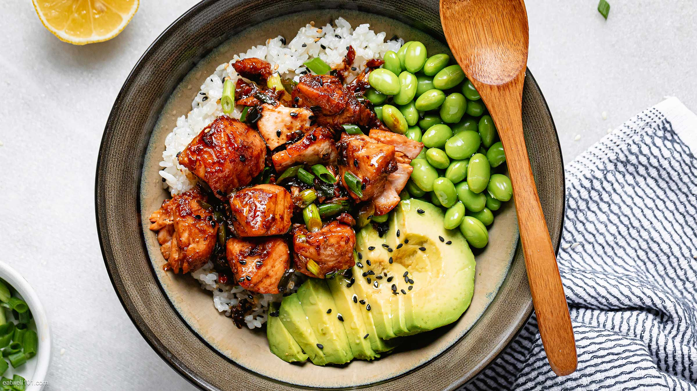

Sushi roll in a bowl!
"Sticky rice, bourbon glazed salmon, edamame, avocado, and green onion... this one will make you think twice about
calling for takeout!"
Ingredients
- 1 lb. salmon filets
- 1 cup sushi rice
- 3 tbsp. rice vinegar
- 1/2 tsp. salt
- 1 tbsp. honey
- 1 tsp. brown sugar
- 2 tsp. soy sauce
- 1 tsp. sesame oil
- 1/2 tsp. grated garlic
- 1/2 tsp. grated ginger
- 1 tbsp. sriracha
Steps
-
Cook sushi rice according to package and add a baby bit of butter.
-
Mix rice vinegar, brown sugar, and salt together in a small bowl. Add to rice.
-
Put rice in serving bowls and sprinkle with sesame seeds. Add heated edamame and sliced avocado.
-
Mix honey, sesame oil, soy, garlic, ginger, and sriracha to make teriyaki sauce.
-
In a skillet over medium heat, with olive oil, brown salmon filets quickly on each side. Pour teriyaki
sauce over salmon. Turn heat back to medium/high to finish cooking salmon. Sprinkle on scallions.
Return to top
Return to recipes